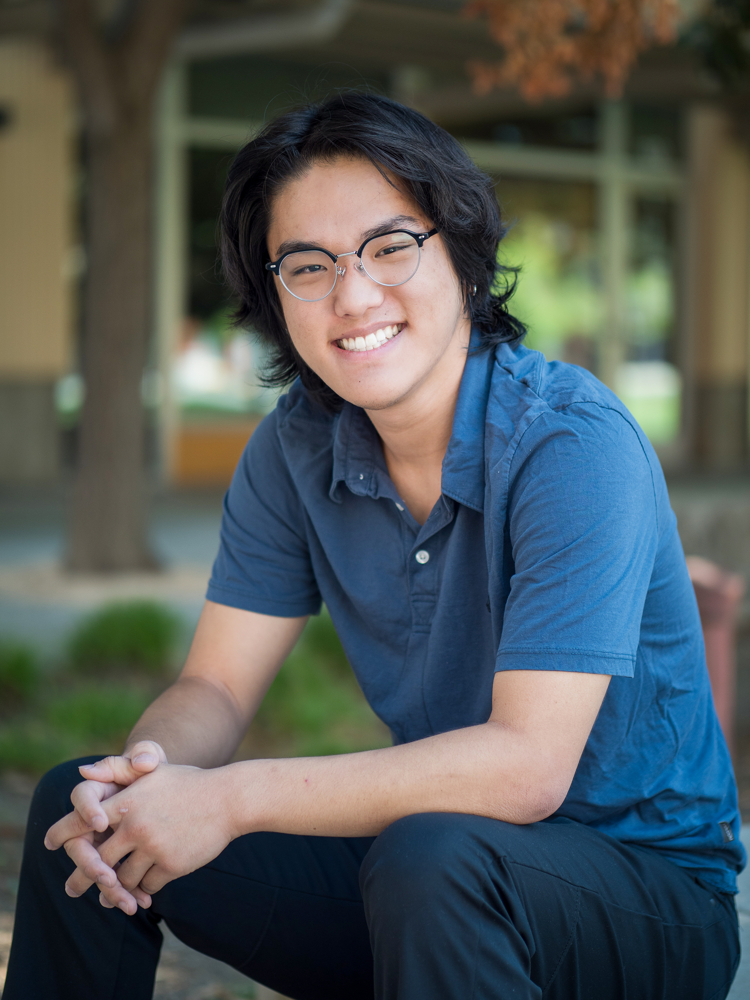

About Me

Although I was born in South Korea, my family immigrated to Australia a year after I was born and moved again to the United States right around 4rd grade. I feel very fortunate to have experienced so many cultures and I love traveling, trying new things, and meeting new people. My current hobbies include playing games like Red Dead Redemption and practicing Brazilian Jiu Jitsu, I started BJJ as a freshman and got my blue belt after 2 years. In the future I want to use my computer science knowledge and work on innovative projects that can change the world, especially with how quickly the field of computer science is expanding in the current day. When I graduate I hope to be accepted into a highly technical company so I can further refine my skills in the field I love.
Brazilian Jiu Jitsu
BJJ is a grappling based martial art where you use leverage to control opponents. Even though I was a complete beginner I got deeply into Brazilian Jiu Jitsu during college to the point where I'm now president of the BJJ Club. Although it took me a lot of effort I got by blue belt in two years.
Sports
Other than BJJ I take part in lots of other sports on campus. I've joined a rec soccer team with some friends I met during a physics lab and also spent many hours rock climbing at the UCD ARC. I also bike everywhere in Davis, most days just going to campus and back means I've ridden about 5 miles.
Clubs
I'm also a member of CodeLab, an organization at UC Davis working to provide students with real-world experience in the software and design industry. I have the opportunity to work alongside clients such as Google and made many great friends during the development cycle. Althogh it gets busy balancing club responsibilities and schoolwork, this experience absolutely prepares me to be an efficient SWE.
Hobbying
In my off time I like to wind down by painting with friends and playing a variety of games such as online, tabletop, and couch co-op. A friend I met first year in the dorms introduced me to the setting of Warhammer 40,000 so I've spent a lot of my time buying and painting miniature models. Having an excuse to meet up with friends and hang out to do a shared activity has been great after tough exams to unwind and catch up, especially with how busy everyone is.